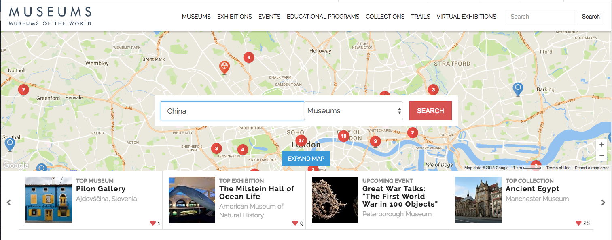

Art Around the World

One of my ideas was to have a website to feature art specifically by People of Color. I wanted it to be an integration of history and art. We can learn more about one country through their art. We see in historical paintings how certain person felt at a certain time about the age they were living in. A painting is not only a snippet of someone's life, it is representative of the culture they were living in, what they wore, what they ate, how they lived. We can see a culture and people change through time also, how their clothes changed, how their interactions differed, how the industrial revolution started a new world in every part of the globe.
An idea similar to mine is this website. Link. It features an interactive map where the viewer can search up any part of the world and be linked to museums within that area. From there, one can explore the opportunities of those websites, the featured galleries and artwork, descriptions, etc.
Museums around the world is a bit limiting however. Many museums will not display much of their gallery for free, thus selections are few and informations scattered. I would like to make history lessons through art. I would feature specific artwork from different regions, and it will include analyzations of what is presented. What kind of clothing they are wearing, how did that change over time. What traditions are they partaking in and is it still practiced today. Etc.